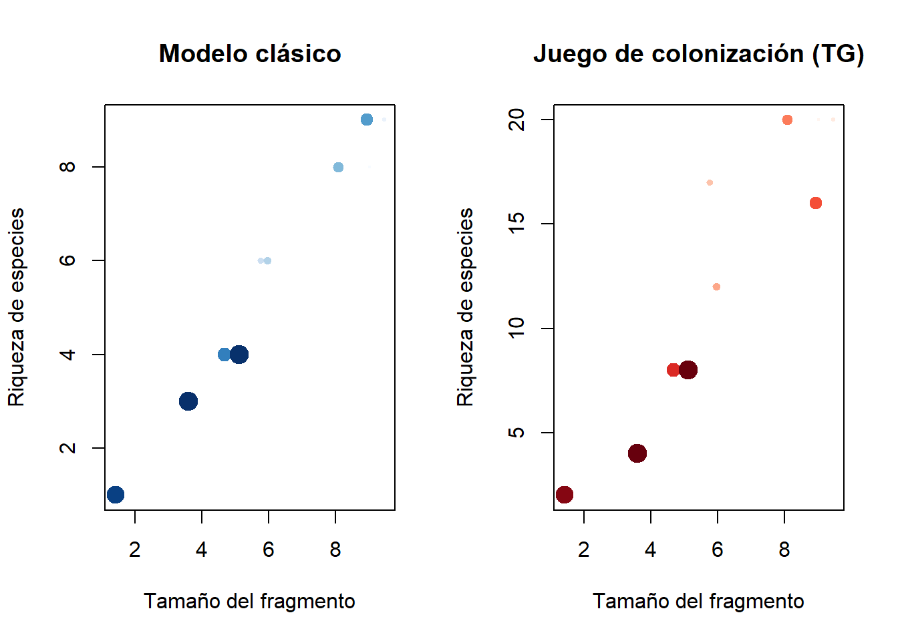

12 7.4 Ejemplo real: Diversidad de aves en paisajes fragmentados
Para este ejemplo, usamos datos simulados representando fragmentación de hábitats:
# Simulación de fragmentación
set.seed(123)
habitats <- tibble(
fragmento = 1:10,
tamaño = runif(10, 1, 10),
aislamiento = runif(10, 0.1, 1),
riqueza = tamaño - 0.5 * aislamiento + rnorm(10, 0, 0.5)
)
# Visualización
habitats %>%
ggplot(aes(x = tamaño, y = riqueza, size = aislamiento, color = aislamiento)) +
geom_point(alpha = 0.7) +
labs(title = "Relación entre fragmentación y riqueza de aves",
x = "Tamaño del fragmento", y = "Riqueza de especies") +
theme_minimal()